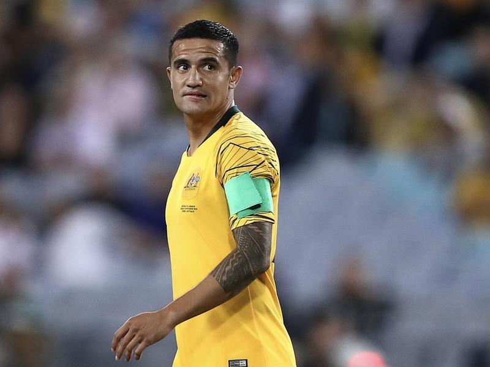

Tim Cahill – O Rei dos Socceroos
Se existe um jogador que simboliza a Austrália no futebol, esse jogador é Tim Cahill. Com 50 gols em 108 partidas, ele é o maior artilheiro da história da seleção australiana. Foi o primeiro australiano a marcar em uma Copa do Mundo e também o primeiro a marcar em três Copas diferentes.
Seu momento mais famoso aconteceu na Copa de 2006, quando marcou dois gols na virada histórica sobre o Japão. Em 2014, anotou contra a Holanda um dos gols mais bonitos da história dos Mundiais.
Principais feitos: maior artilheiro da Austrália, primeiro australiano a marcar em Copas do Mundo, participação em quatro Copas do Mundo e campeão da Copa da Ásia de 2015.